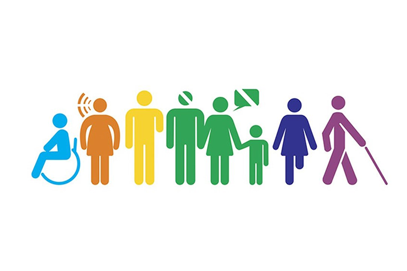

Problema: Por um lado muitas pessoas com Pessoa com Deficiência (PCD) estão em busca de oportunidades de emprego, por outro lado as empresas têm dificuldade de se adequar a lei que exige a contratação desses profissionais, ficando por hora muitas vezes irregulares ou com falta de efetivo no quadro de trabalho
Nicho: Pessoas com Deficiencia (PCD) e empresas que buscam empregar estas pessoas
Proposta de Valor: Formar um canal de acesso entre as pessoas com PCD à empresas que buscam a contratação das mesmas, fazendo que a busca por emprego destas pessoas seja facilitada e também haja uma regularização destas empresas
Equipe:
- Eduardo Kipper Della Santa Rubio
- Mario Jorge Chostak
- Pedro Nicoletti Obalski
- Luiz Felipe Carvalho Gomes